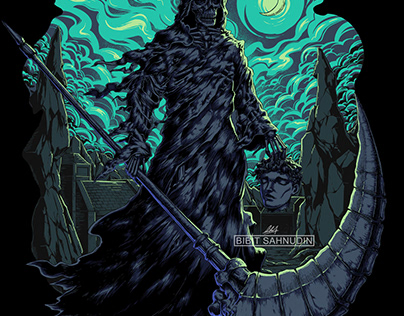

v tom se zjevil Bůh smrti, který je pohledem zpopelnil. Do tebe zabodl specialní katanu(nejspis nejaky artefakt). V jeden moment tě zasáhla životní energie, která tě oživila. Bůh smrti se ti jen vysmál a řekl ti: „Dobro vítězí nad zlem“, pak zmizel.
Ted si mohl vklidu jít do kina s kamarády
